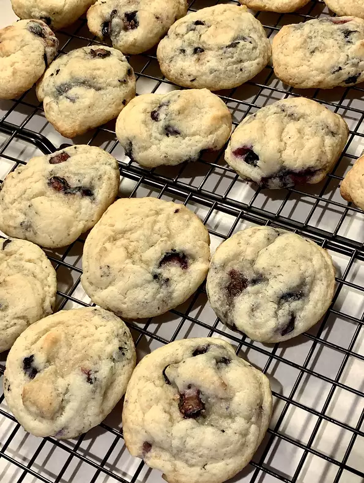

When life brings you down, have these cookies to bring you up!
A delicious alternative to chocolate cookies!
Ingredients:
- 2 cups all-purpose flour
- 2 teaspoons baking powder
- 1/2 cup shortening
- 1/2 teaspoon salt
- 1/4 cup milk
- 1 egg
- 1 cup white sugar
- 1 teaspoon almond extract
- 1 teaspoons lemon zest
- 1 cup fresh blueberries
Recipe steps:
- In a large mixing bowl, cream shortening, sugar, egg, milk, almond extract and lemon zest. Mix well
after the addition of each ingredient. Combine baking powder, flour and salt; blend into the mixture.
Fold in blueberries. Cover and chill for 4 hours.
- Preheat the oven to about 190 degrees celsius.
- Drop dough by teaspoonfuls onto ungreased cookie sheets, about 1 and a half inches apart.
- Bake for about 15 minutes in the oven. Let the cookies cool on the baking sheets for a few minutes,
before transferring to wire racks to cool completely.
Return to top
Return to main page